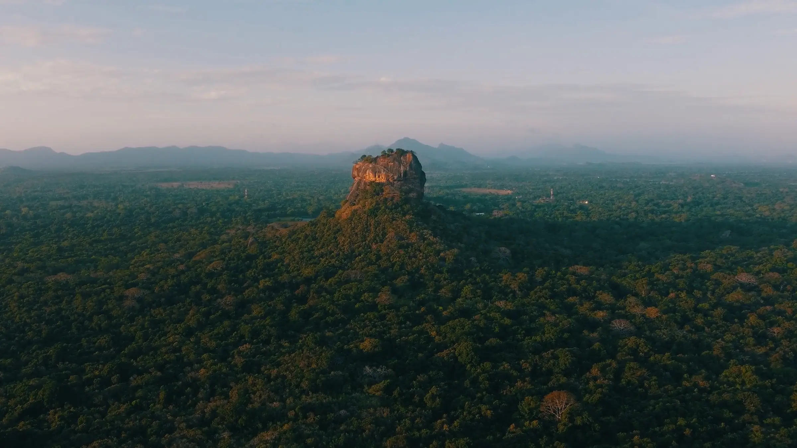
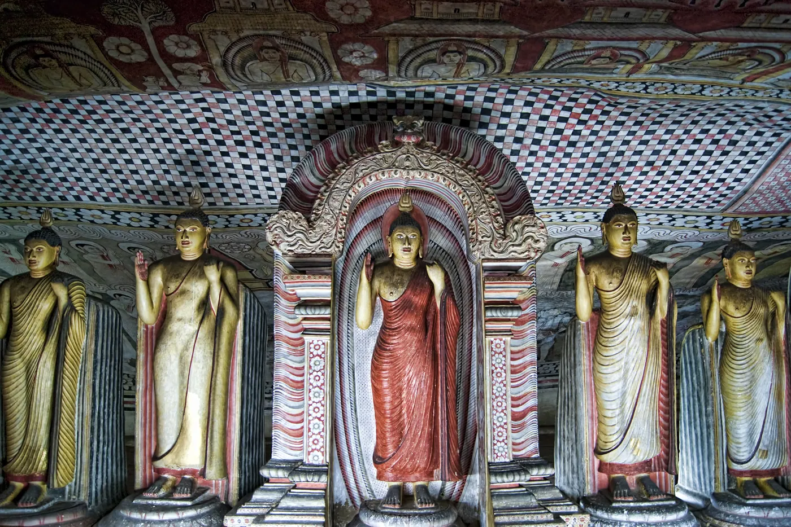
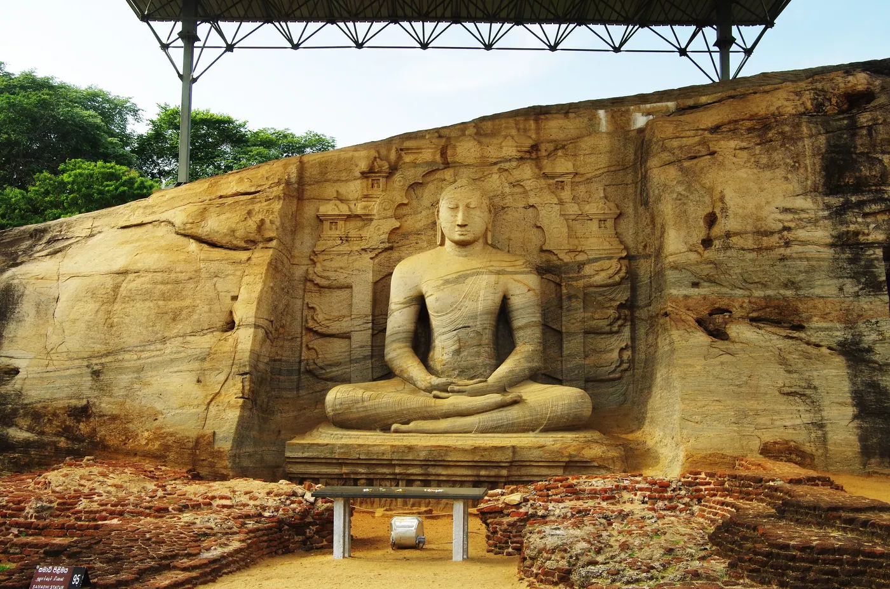
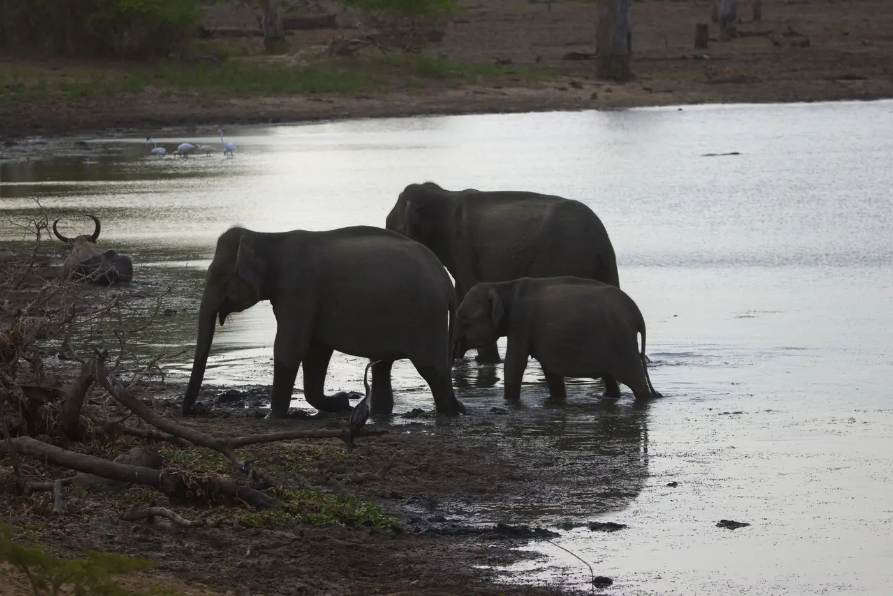
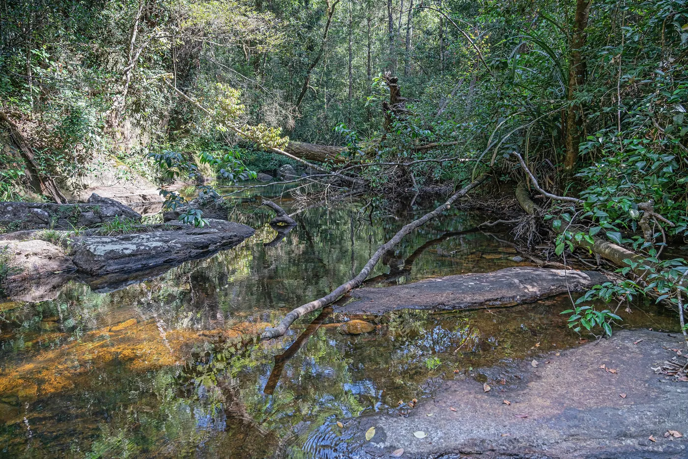
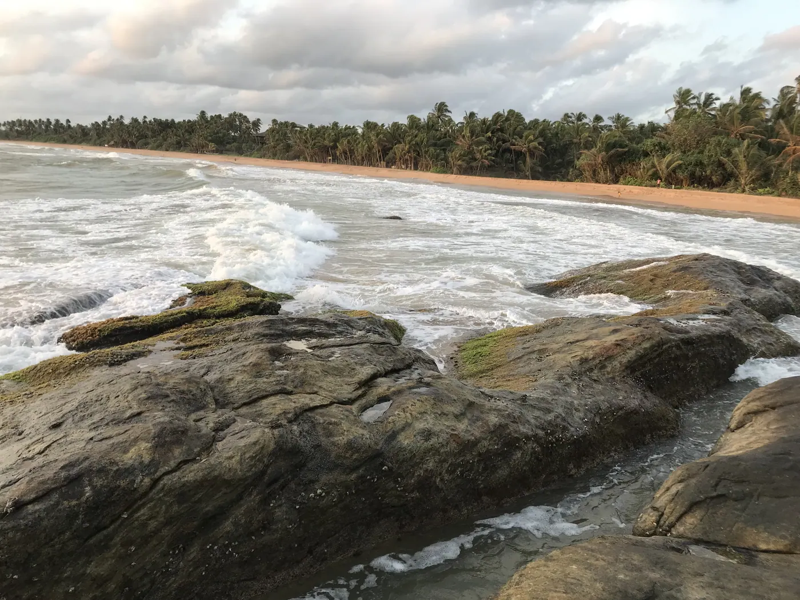
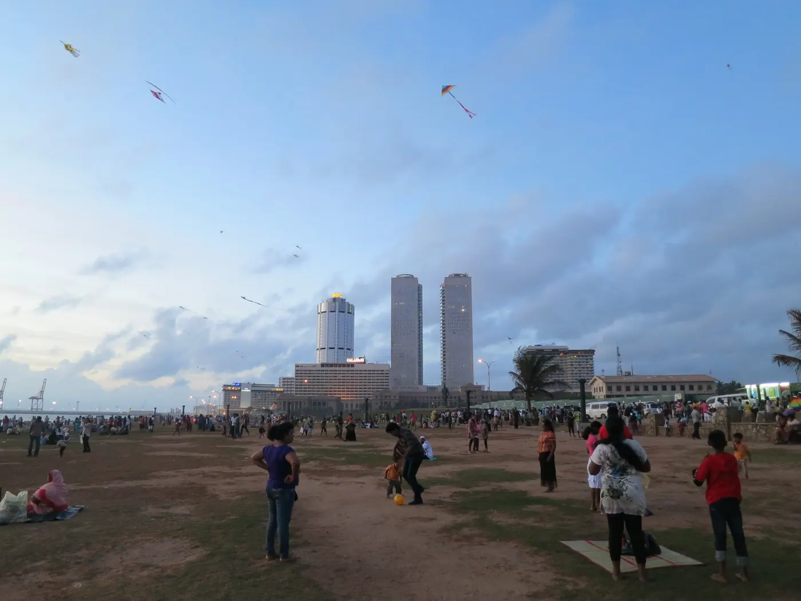
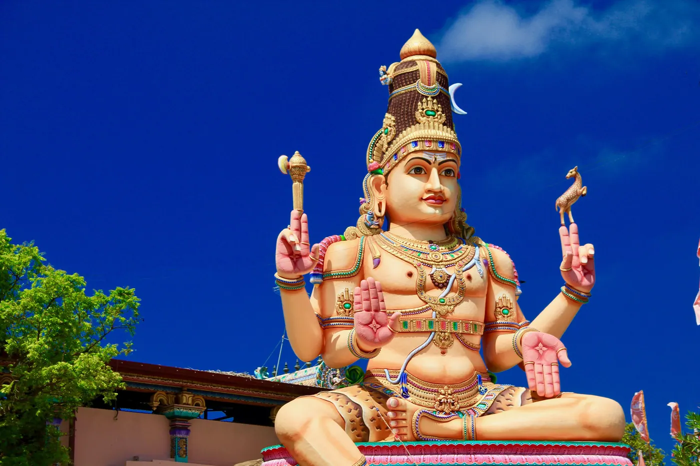
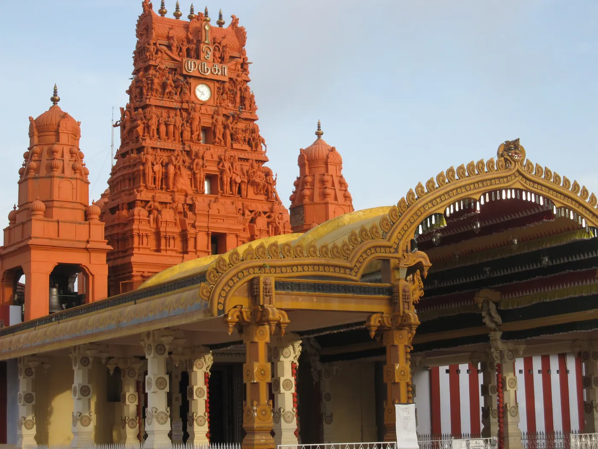

Cultural Triangle
Sigiriya
UNESCO-listed rock fortress with water gardens, frescoes, the Mirror Wall and the Lion’s Paw, plus village tours by bullock cart and catamaran.
Your Sri Lanka story starts here


Destinations
Fifteen places across the island, mapped. Tap a hotspot or filter by region.
Island map
UNESCO-listed rock fortress with water gardens, frescoes, the Mirror Wall and the Lion’s Paw, plus village tours by bullock cart and catamaran.

The UNESCO-listed Dambulla Cave Temple: cave shrines, Buddhist murals and more than 150 Buddha statues.

Ancient royal city: Lankathilaka Image House, Rankoth Vihara, the Sacred Quadrangle and the granite Buddhas of Gal Vihara.
On:Explorer

The sacred Temple of the Tooth Relic beside Kandy Lake, the city viewpoint and Kandyan cultural dance.

Five Peaks trekking, forest cabanas and the Kotaganga waterfall chain (on The Ultimate Sri Lanka Adventure).
Misty tea estates, factory visits with Ceylon Tea tasting, Ramboda Falls and the Nanu Oya railway station.

Nine Arch Bridge, Little Adam’s Peak, Ravana Falls and the famous hill-country train.

Jeep safaris through grassland, forest and lagoons — elephants, deer, crocodiles and birdlife; leopards are present but never guaranteed.

UNESCO-listed rainforest reserve for guided treks and bird watching.

Golden beaches, Parrot Rock, Coconut Tree Hill, surf lessons and seasonal whale watching.

UNESCO-listed fort: ramparts, the lighthouse, Dutch-era streets and Indian Ocean sunsets.

Wide sandy beaches, river boat safaris through mangroves and water sports.

Arrival and farewell: Galle Face Green, Gangaramaya Temple, Negombo’s Dutch Canal and fish market.

Thirukoneswaram Temple above the ocean, Kanniya hot water springs and Nilaveli Beach.

Nallur Kandaswamy Temple, Keerimalai springs, Jaffna Fort, fishing tours, palmyrah toddy and cooking classes.
Tailor-made, from first message to farewell